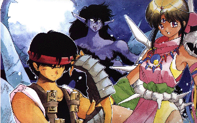

3X3 Eyes

From the Anime Pocket Guide:
Cast:
Pai/Sanjiyan ......................... Megumi Hayashibara
Yakumo Fujii ............................ Kouji Tsujitani
Benares .................................... Akio Ohtsuka
Mei Xing .................................. Mayumi Tanaka
Ling Ling .................................... Ai Orikasa
Mama (Part 1) ....................... Yukimasa Kishino
Chu (Part 1) ........................... Takeshi Aono
Natsuko (Part 2) .......................... Yuko Mizutani
Saru (Part 2) ......................... Masami Kikuchi
{Girl} (Part 3) ........................... Mariko Kouda
Ryouko (Part 3-4) ......................... Kouji Totani
Armulet .................................... Naoko Matsui
Hide .................................. Hikaru Midorikawa
Tatsuya .................................. Hiroyuki Satou
Professor Fujii .............................. Osamu Saka
Hoan ..................................... Toshiko Fujita
Steve Long ................................. Banjou Ginga
masked man ............................. Ryoutarou Okiayu
Description:
Yakumo Fujii is an ordinary high school student (with an unusual
job :-)) until he runs into Pai...literally. Pai appears to
be a young (and cute) girl who is a bit lost. Pai is actually
a survivor of a mythical race called the Sanjiyan who are all
but extinct. In effect, Pai is an immortal 'monster' with 3
eyes who is 300 years old. Yakumo's first encounter with Pai
leads to his death, upon which he is resurrected as her 'Wu',
an immortal and indestructible servant of a Sanjiyan. He joins
her in her quest to become human.
NOTE: The title is pronounced Sazan Eyes.
Other Resources
Anime Video Game Resource Center © 1998 by Luis A. Cruz